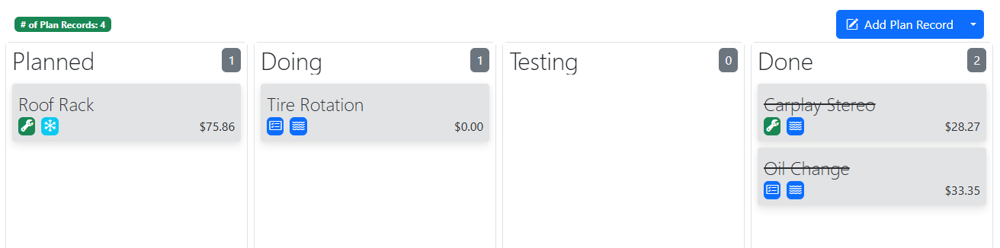
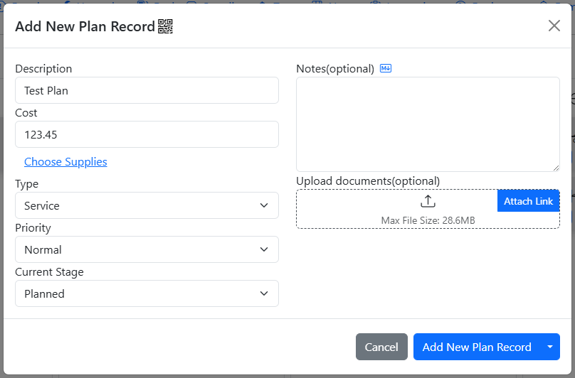
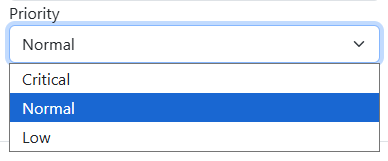
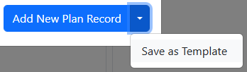
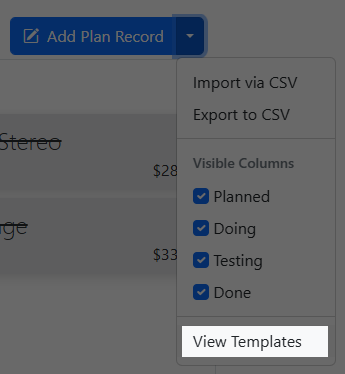
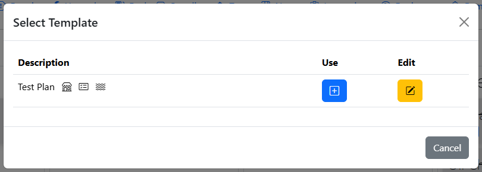
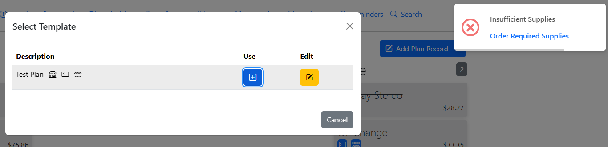
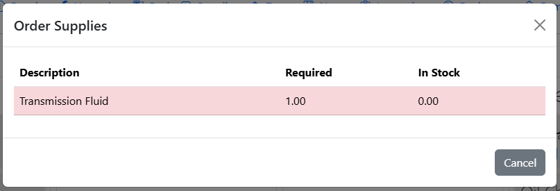

Planner
The Planner tab is where you can plan and track progress of future or current plans for your vehicle. The planner tab consists of 4 swimlanes(vertical panels) where plans can be moved to different stages via drag and drop.

The records stored in Service/Repair/Upgrade tabs tend to be inserted retroactively(after the work is done), hence the Planner tab was developed to keep track of To-Do's.
Adding a new Plan
The Planner tab is hidden by default, you must enable it by checking the "Planner" switch under "Visible Tabs" within the Settings tab.
To add a new plan, simply click on the "Add Plan Record" button and fill in the details of the plan.

Plan Type
You are required to select at least one Plan Type - Service, Repair, or Upgrade. When the Plan Record is moved to Done, the Plan Record will be automatically converted into the selected type and it will then show up in its respective tab. The type is indicated by an icon corresponding to their respective tabs.
Plan Priority
Within the swimlanes, plans are sorted from Critical priority to Low priority. They are also indicated by an icon - Fire for Critical, Waves for Normal, and Snowflake for Low.

Plan Stages
Planned - This is considered the backlog, where no work has been performed yet. i.e.: Shopping for a lift kit.
Doing - This is when work has been started on the task. i.e.: Installing the lift kit.
Testing - This is where the work is being reviewed / tested. i.e.: Going for a test drive with the lift kit.
Done - This is where the work is marked as completed.
Updating Plan Stages
There are two ways you can update the stage a plan is currently in: drag and drop or updating it via the dropdown when editing a plan. You can backtrack a plan's stages within Planned, Doing, and Testing. i.e.: You can move the plan back from Testing to Doing if you find out there is more work to be done.
Moving to Done
when a Plan is being moved to Done, it will prompt you to enter the current odometer reading. This is to ensure that the Service/Repair/Upgrade record that will be created from it contains the most up-to-date odometer reading.
Once a Plan has been marked as Done, it can never be taken out of it. The only action that can be performed on it is Delete. You can delete Plans in the Done stage by clicking on them.
Plan Templates
For records that have a fixed interval(i.e. oil changes), it is recommended that you create a Plan Template instead.
Creating a Template
To create a template, simply fill in the details / select the supplies to requisition for the plan, but instead of clicking the "Add New Plan Record" button, you will click on the dropdown next to it and select "Save As Template"

The template will now be created and named after the description of the plan record.
Using Templates
To create a plan record from a template, click on the "View Templates button" and a dialog will show up with the saved templates for the vehicle


The shop icon indicates if the template has supplies requisition and the paper clip icon(not shown) indicates if the template has file attachments.
To use the template, simply click on the "+" button. The app will then perform a check to ensure that there are sufficient quantities of the supplies used by the template. If there are insufficient quantities, an error message will pop up telling you which supply is short.

